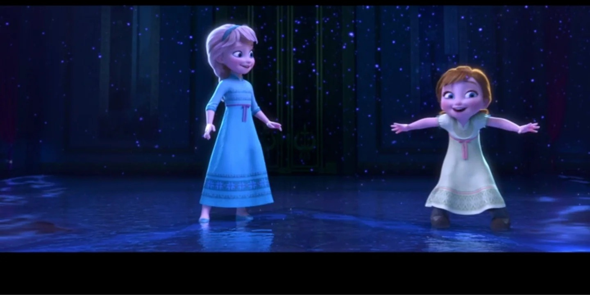

All Is Found · 魔法的源头

📖 小说概述
一部于 2020 年出版的《冰雪奇缘》官方正典短篇小说集，由迪士尼组织多位作者执笔，共收录 11 个篇章：一篇引言与十篇相互独立、彼此并不连贯的短篇故事。它并非单一的线性剧情，而是以「群像补完」为旨趣的短篇合集——每一篇都围绕不同角色或主题展开，填补正片叙事之外的日常片段与支线插曲。与 Dangerous Secrets 互补，更聚焦「魔法从哪来」与那首贯穿系列的歌。
❄️ 艾莎在这本小说中的完整经历
一首歌的源头
开篇引言以轻松幽默的口吻向读者道贺「《冰雪奇缘》生日快乐」，回顾艾莎逃离王国、抛下王冠、意外创造永恒寒冬并筑起冰宫殿的那段往事，为整部短篇集定下怀旧而温馨的基调。《All Is Found》本是 Iduna 的摇篮曲，承载着她对北方、对魔法森林的记忆。这首歌贯穿系列，是艾莎魔法起源的线索。
艾莎相关短篇
短篇集中有多篇直接涉及艾莎：《阿伦黛尔的安娜与银色溜冰鞋》以阿伦黛尔初寒时节为背景，从艾莎公主敏锐感知寒冬将至的视角切入，描摹姐妹二人与冰雪初临的相处。《艾莎与霜怪》回望艾莎魔力失控、冰霜自指尖爆开、将整个王座厅冻结为坚冰的惊险时刻，深入刻画她对自身力量的恐惧与挣扎。《加冕日》回到艾莎加冕前夕，从她被过分欢快的声音吵醒、把被子蒙过头顶不愿起床的私密瞬间写起，为女王加冕这一重大时刻补上轻松的前奏。
魔法的来处与姐妹的童年
通过父母的故事与各篇短篇，揭示艾莎的冰雪之力源自母亲血脉与森林的羁绊。书中重温姐妹幼年的亲密，呼应电影里那扇被关上的门之前的时光。《安娜与克斯托夫的订婚》以一封「嘘——别告诉当事人」的皇家订婚派对邀请函为线索，讲述艾莎、奥拉夫与布达、克利夫为安娜女王与克斯托夫筹备惊喜派对的小插曲。总体而言，这些短篇或以节日、或以日常、或以回忆为窗口，共同拼贴出《冰雪奇缘》世界中主要角色在主线剧情之外的生动侧影。
🏷️ 作品定位
本书属官方正典（Canon）短篇集，定位为「群像式补充」而非主线剧情。它不以连贯叙事推进世界观，而是通过十篇彼此独立的微型故事，对已知角色与场景进行轻松、温情向的延伸刻画。作为《冰雪奇缘》十周年之际推出的纪念性短篇合集，它既是粉丝向的贺礼，也承担着为正片叙事补白的职能。
🔗 与电影/其他作品的关联
- 安娜（Anna）：以女王身份出现于多篇小说（订婚、与国王、贝丽特生日等）。
- 艾莎（Elsa）：贯穿引言与《霜怪》《加冕日》《银色溜冰鞋》等篇，涉及魔力失控与加冕前夜。
- 克斯托夫（Kristoff）：作为安娜的未婚夫，出现于订婚主题短篇。
- 雪宝（Olaf）：于订婚筹备与出海篇章中担当喜剧角色。
- 戴斯汀·马提亚斯将军：北地守卫者，关联被魔法迷雾困住三十四年的背景。
- 北乌兰德拉人（北地人）：于《布谷鸟之歌》中展现营地与驯鹿迁徙生活。
✨ 这本小说补充了什么电影里没有的艾莎信息
- 《All Is Found》歌词背后的真实故事
- Iduna 与北方魔法的具体联系
- 艾莎魔法起源最权威的官方解释
- 姐妹童年更多温馨细节
- 艾莎加冕前夕的私密瞬间（被吵醒、不愿起床）
- 艾莎敏锐感知寒冬将至的视角
- 正片着墨较少的角色（奥肯、马提亚斯、贝丽特、北地人群像）的日常
💡 这本小说如何改变/深化了我们对艾莎的理解
All Is Found 像一把钥匙，把散落在各部里的「艾莎为什么这样」一次性收束——她的魔法，是一首从母亲那里传下来的歌。它覆盖正片未及展开的角色日常，让配角与次要人物获得属于自己的高光时刻。
⭐ 亮点与特色
- 短篇集形式：十篇独立故事 + 引言，可随机翻阅，无需遵循线性阅读，适合作为轻松的日常读物。
- 群像补完：填补正片未及展开的角色日常，让配角与次要人物获得属于自己的高光时刻。
- 十周年纪念属性：以「生日快乐」式引言串联，兼具怀旧与庆典意味。
- 基调轻松温情：相较正片的戏剧冲突，本集更偏向节日、家庭、幽默与治愈向的支线片段。
- 多作者执笔：由迪士尼统筹、多位作者分篇创作，风格在统一世界观下呈现细微差异。
